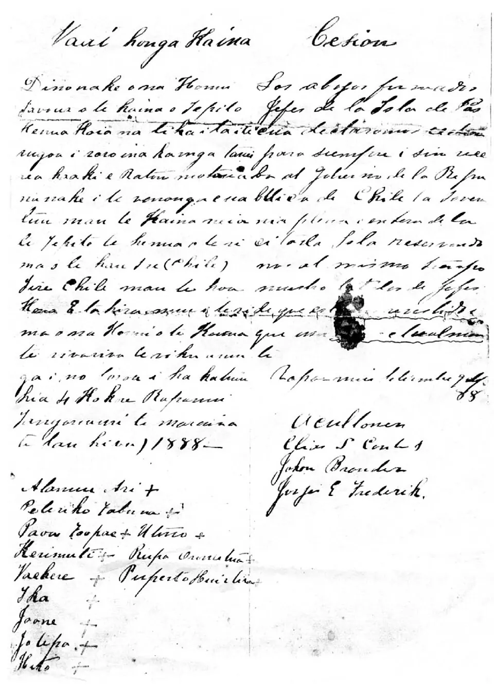

Incorporación de Rapa Nui

En el siglo XIX, Rapa Nui sufrió una catástrofe demográfica: en 1862 traficantes de esclavos se llevaron a gran parte de la población a Perú, y las epidemias posteriores la redujeron drásticamente. Tras la Guerra del Pacífico, Chile buscó proyectarse en el océano y el capitán Policarpo Toro, que había visitado la isla años antes, impulsó su anexión.
El 9 de septiembre de 1888, Toro firmó el Acuerdo de Voluntades con el ariki Atamu Tekena y el consejo de jefes rapanui. Existen dos versiones: el texto en español habla de una cesión de soberanía, mientras que el texto en lengua rapanui, con influencia del tahitiano, se entiende como un pacto de amistad y protección en que los jefes conservaban la propiedad de la tierra. Esa diferencia sigue en el centro de las demandas del Pueblo Rapa Nui.
En la práctica, el Estado chileno arrendó la isla a una compañía ganadera, y durante décadas los rapanui vivieron confinados al poblado de Hanga Roa, con fuertes restricciones. Recién en 1966 la Ley Pascua les reconoció plenos derechos ciudadanos y estableció una administración civil. Hoy el pueblo rapanui reivindica mayor autonomía y el control de sus tierras.
Versión para niños
Rapa Nui es una isla en medio del océano Pacífico, hogar del pueblo rapanui. El 9 de septiembre de 1888, el marino chileno Policarpo Toro firmó un acuerdo con el ariki, o jefe principal, Atamu Tekena y otros jefes de la isla. Ese documento se llama Acuerdo de Voluntades, y desde entonces la isla forma parte de Chile. Los rapanui entendieron que serían amigos de Chile y que la tierra seguiría siendo suya, pero después perdieron el control de gran parte de ella.
Para maestros
Nivel sugerido: 1° medio
Objetivo: Analizar la incorporación de Rapa Nui a Chile a partir del Acuerdo de Voluntades, sus dos versiones y sus consecuencias para el pueblo rapanui.
Preguntas para la clase:
- ¿Qué entendió cada parte al firmar el Acuerdo de Voluntades?
- ¿Por qué es importante que un acuerdo esté escrito en la lengua de ambas partes y que signifique lo mismo en las dos?
- ¿Cómo afectó al pueblo rapanui el arriendo de la isla a una compañía ganadera?
Actividad (20–30 min): Los estudiantes leen una versión simplificada de los dos textos del acuerdo (en español y la traducción del texto rapanui) y anotan sus diferencias en una tabla. Luego discuten en grupos qué consecuencias tuvo esa distinta interpretación y redactan una pregunta que le harían hoy a una autoridad rapanui.
Fuentes sugeridas: Memoria Chilena; Museo Antropológico Padre Sebastián Englert; Biblioteca del Congreso Nacional (BCN).
Objetivos de Aprendizaje (Currículum Nacional)
- 6° básico · HI06 OA 05 Describir cómo se conformó el territorio de Chile durante el siglo XIX … la incorporación de Isla de Pascua
- 6° básico · HI06 OA 10 Identificar elementos constitutivos del territorio nacional, considerando la localización de Chile en el mundo y su carácter tricontinental
- 1° medio · HI1M OA 24 Evaluar … las relaciones de conflicto y convivencia con los pueblos indígenas (aymara, colla, rapa nui, mapuche, quechua, atacameño, kawéskar, yagán, diaguita)
Personajes
Revisión humana pendiente. Cómo se revisa · Reportar un error
Cómo citar: Historia de Chile. (2026). Incorporación de Rapa Nui. En Historia de Chile: atlas y línea de tiempo. https://moises-salgado.github.io/historia-de-chile/momento/incorporacion-de-rapa-nui.html